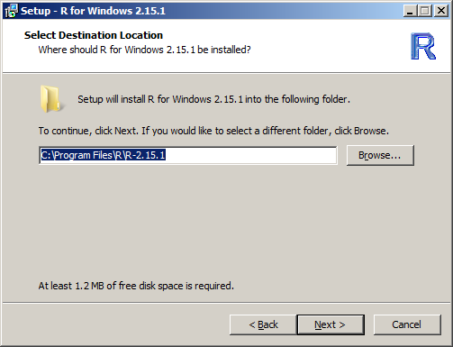

Open the saved file from 1 above to begin the installation. At the first setup screen, click ’Next’ to
continue.
When prompted with the license, click ’Next’ to continue.
When prompted for the location to install R, we strongly encourage you to use the default. When you
have made your decision, click ’Next’.

When prompted with the components to install, you should select a ’User installation’. Then click
’Next’.
When prompted with the option to alter the startup options, we suggest selecting No (acceptdefaults). When you have made your decision, click ’Next’.
When prompted with the start menu folder options, make your choice and then click ’Next’.
When prompted with the additional tasks options, we suggest making sure that Save version numberin registry and Associate R with .RData files are both checked. When you have made your
decisions, click ’Next’.